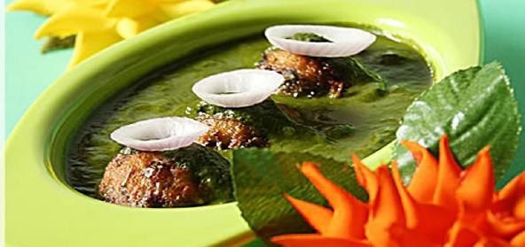

Ingredients:
For the koftas
1)1 cup palak leaves (washed and chopped)
2)1 cup mashed boiled potatoes
3)Few cashewnuts chopped roughly
4)2 tblsp grated paneer
5)1 tblsp fresh corander leaves
6)1/2 tsp jeera powder
7)1-2 green chillies (chopped)
8)1 piece ginger (grated)
9)1 tblsp Maida(flour)
10)salt to taste
11)oil for frying
For the gravy
1)2 bunch palak
2)2 onions (blanched and make a paste)
3)2 tomatoes (blanced and pureed)
4)2 tblsp cashewnut paste
5)1 tsp ginger garlic paste
6)1/2 tsp garam masala
7)1 tsp jeera or cumin seeds
8)1 tsp red chilly powder
9)2 tsp fenugreek leaves
10)2 tblsp Butter
11)salt to taste
12)1/4 cup cream
How to make palak paneer kofta curry:
1.Take all the ingredients needed for the koftas and mix them well. Make small round balls and roll them in some cornflour.Now deep fry them on low heat till they are golden brown. Drain and keep aside.
2.Clean the spinach and boil the spinach in very little water and salt. Add a pinch of sugar to maintain the green color. Once boiled drain out the excess water and squeeze out water from the spinach and make a fine paste.
3.Heat butter in a wok or kadai.Add the jeera and when it begins to splutter add onion, ginger garlic paste and fry till golden brown.
4.Now add pureed tomatoes and cook till oil separates.
5.Add the palak puree and cashewnut paste and mix well.Now add salt, red chilly powder,garam masala and cover cook for 3-4 minutes. Add 1/4 cup water and let it boil. Then add cream and crushed fenugreek leaves. Mix well.
6.Finally add the koftas in the gravy and let it simmer for another 2 minutes so that the koftas absorb the flovour of the gravy.
7.Dish out the koftas in a serving bowl.
8.Garnish it with some swirls of fresh beaten cream on the top.
9.Serve hot with chapatis or naan.
Note: 1 Add the koftas in the curry only at the time of serving. So you can keep the curry ready and at the time of serving place the koftas and simmer for 2 -3 minutes and then serve.
2. If you have a stale bread you can replace the maida with 2 -3 bread slice. Remove the sides and mash them with the kofta ingredients.